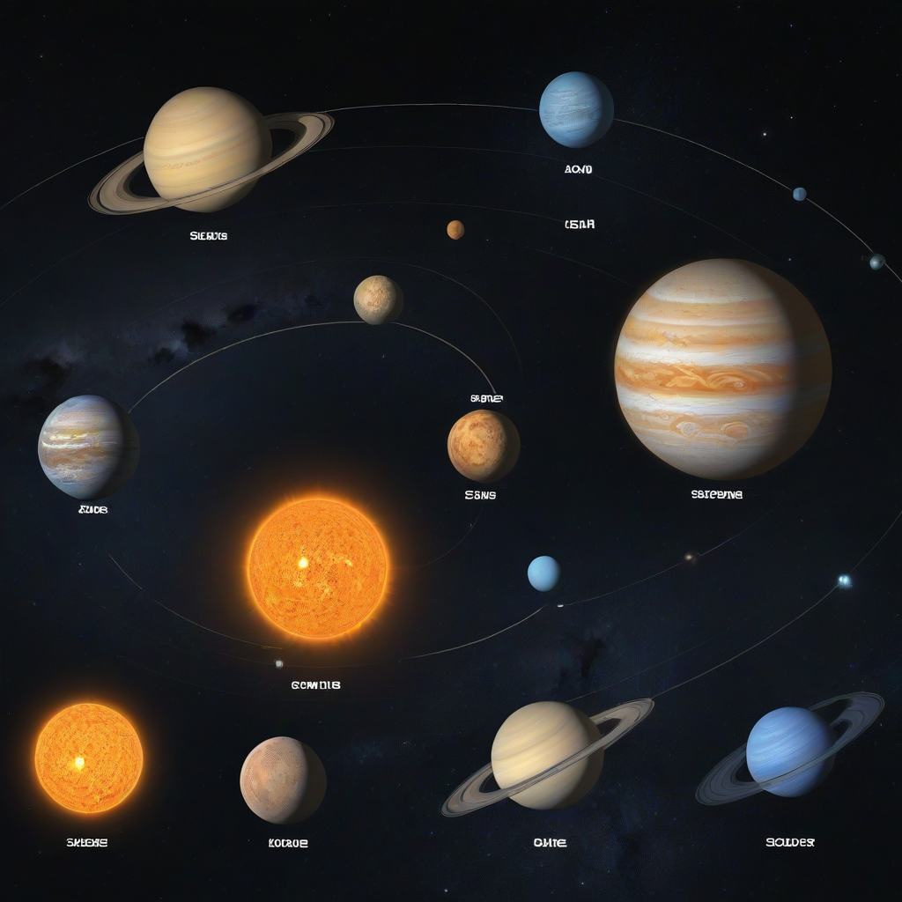

Thinking about solar? You’re not alone. In 2026, over 2.1 million US homes are projected to install solar—up 15% from 2025—thanks to falling panel costs, stronger state incentives, and rising energy bills. But here’s the hard truth: the most common solar regret isn’t cost—it’s undersizing. Too many homeowners aim for “good enough” and end up paying more for grid power than expected, or needing costly expansions later.
Sizing correctly means matching your system to *your* actual usage—not the installer’s guess, not the neighbor’s 10 kW setup, and definitely not the sales pitch. Done right, solar can slash your electric bill to near zero, increase your home’s value, and future-proof against utility rate hikes. Done poorly? You’ll pay more over time and miss out on the biggest financial win.
This step-by-step guide cuts through the noise. Based on real-world project data from 2026 installations and updated with the latest federal incentives, you’ll learn exactly how to size a solar system for your home—accurately, affordably, and confidently.
Why How to Size a Solar System for Your Home Matters

Importance
Proper sizing directly impacts your return on investment (ROI), system longevity, and grid interaction. An undersized system won’t cover your needs; an oversized one wastes money on unused generation and may violate utility interconnection limits. In 2026, most utilities enforce strict net metering caps (e.g., 100% of annual usage), so overshooting can void credits entirely.
Common Mistakes
- Using only *current* monthly bills (ignoring seasonal spikes)
- Ignoring roof shading or orientation (not all south-facing is equal)
- Skipping a load audit (e.g., adding an EV charger post-install)
- Overestimating panel efficiency (real-world output is ~15–22% less than lab ratings)
What to Expect
By the end of this gui
- Your precise kW needs (not a range)
- How many panels and what inverter/battery combo fits your roof and budget
- Real 2026 cost breakdowns—including hidden fees
- When to DIY vs. hire a pro
Step-by-Step Guide
Step 1: Assessment
This is where 80% of homeowners rush—and fail. Slow down. Gather these before calculating anything:
- 12 months of utility bills (to capture winter/summer peaks)
- Roof assessment data (use Google Earth or a laser rangefinder for tilt/orientation)
- Future plans (e.g., EV, heat pump, home addition)
Calculate your annual usage in kWh (add all 12 months), then divide by 365 to get your average daily kWh.
Step 2: Planning
Calculate Your System Size
Use this 2026 formula:
Required System Size (kW) = (Average Daily kWh × 1.2) ÷ Peak Sun Hours
- 1.2 = derating factor for wiring, inverter, soiling, and temperature losses
- Peak sun hours = location-specific (see table below)
Example: You use 30 kWh/day in Phoenix (5.2 peak sun hours):
(30 × 1.2) ÷ 5.2 = 6.9 kW
Panel & Inverter Matching
- Most panels today: 400–450W (monocrystalline)
- For 6.9 kW, you’ll need ~16–18 panels (6,900W ÷ 400W = 17.25)
- Match inverter to panel string configuration (e.g., microinverters or hybrid string inverters like Enphase IQ8+)
要不要 Battery Storage?
Batteries aren’t *required* for sizing, but they change your needs:
- No battery? System offsets grid use (net metering applies)
- With battery? Size system to charge battery *and* cover daytime loads (add 3–5 kW to cover battery cycling)
2026 battery cost estimates:
- Enphase IQ Battery 3: $4,000–$6,500 (10.7 kWh, $375/kWh)
- Tesla Powerwall 2: $11,500–$15,500 (13.5 kWh, $850–$1,150/kWh)
Step 3: Execution
Tools Needed
- Roof measuring tape + laser distance meter
- Solar pathfinding app (e.g., Aurora Solar, SunCalc)
- Google Earth Pro (for satellite imagery analysis)
- permit templates from your local utility
Time Required
DIY assessment: 3–5 hours
Professional design: 1–2 weeks (including utility interconnection review)
Safety Precautions
- Never work on a wet or windy roof
- Use OSHA-compliant fall protection for roofs >6 ft high
- Verify electrical panels are up to code (2026 NEC requires rapid shutdown per §690.12)
- Always de-energize circuits before panel wiring
Cost Considerations
DIY Costs (2026)
For experienced DIYers (only for grid-tie, no batteries):
- Panels: $0.80–$1.20/W (bulk from distributors like SolarPortal)
- Inverters: $0.30–$0.50/W (Enphase, SolarEdge)
- Mounting/racking: $0.15/W
- Wiring/breakers: $0.20/W
- Total estimated: $1.45–$2.45/W
6.9 kW system: ~$10,000–$17,000 pre-incentive
Professional Costs (2026)
Average installed cost in the US (EnergySage, Q1 2026):
| System Size | Average Cost (Before ITC) | After 30% Federal ITC |
|---|---|---|
| 6 kW | $24,000 | $16,800 |
| 8 kW | $28,000 | $19,600 |
| 10 kW | $32,000 | $22,400 |
Note: Panel cost = $2.50–$3.50/W (2026 avg), labor = 30–40% of total
Hidden Costs
- Permitting fees: $200–$800 (varies by county; check local building dept)
- Utility interconnection fees: $100–$500 (e.g., PG&E: $425 flat)
- Roof repair: $500–$3,000 (if old shingles need replacement)
- Service panel upgrade: $1,500–$4,000 (if your panel is <100A or outdated)
Budget Planning
- Where to save: Skip premium aesthetics (black-on-black panels add ~$0.10/W for marginal gain)
- Where to invest: Microinverters (vs. string) for shaded roofs—adds ~$0.30/W but boosts yield by 15–25%
- Maximize savings: Claim the 30% federal ITC (through 2032 under IRA) + state credits (e.g., CA SGIP, NY Megawatt Solar)
Frequently Asked Questions
What if my roof doesn’t face south?
East-west systems work well in 2026—especially with time-of-use rates. A 7 kW east-west setup often outperforms a 6 kW south-only system because it spreads generation across morning/evening peaks. Use tools like NREL’s PVWatts Calculator to model production.
Can I size a system to go off-grid?
Technically yes, but it’s rarely cost-effective in 2026. Off-grid requires 2–3x battery capacity vs. hybrid systems. For most homes, a grid-tied system with 1–2 days of backup (e.g., 10–20 kWh battery) is smarter. Only consider off-grid if you’re >5 miles from a utility pole and face $15k+ extension fees.
How much over/undersizing is acceptable?
Utility rules now cap system size at 110% of your annual usage (e.g., if you use 10,000 kWh/year, max system = 8.5 kW). Undersizing by >20% risks ongoing high bills. Always design for 100% coverage + 10% buffer for future loads.
Do I need to account for panel degradation?
Yes. Modern panels degrade ~0.4–0.5%/year (vs. 0.8% in 2010). A 5 kW system in 2026 will produce ~4.75 kW in year 5. Use DOE degradation data for precise projections.
How do I know if my inverter is undersized?
A common error is pairing a 5 kW inverter with 6 kW of panels. The inverter will “clip” excess noon production. Rule of thumb: panel capacity ÷ inverter capacity = 1.1–1.25. So for a 5 kW inverter, use 5.5–6.25 kW of panels.
What if my usage changes (e.g., I buy an EV)?
Leave 1–2 spare spaces on your inverter and roof for future expansion. Most string inverters allow 20% over-paneling. You can also add microinverters later (they scale module-by-module). Plan for growth at the design stage—it’s cheaper than retrofitting.
Conclusion
Summary
Sizing your solar system isn’t guesswork—it’s precise, data-driven planning. In 2026, the sweet spot for most US homes is an 8–12 kW system, sized to cover 90–100% of your annual kWh usage. Use your 12-month bills, apply the 1.2 derating factor, and factor in roof constraints and future loads. Always include a 10% buffer—and don’t skip the load audit.
Next Steps
- Download your 12 months of bills (free from your utility’s online portal)
- Run your numbers using NREL’s PVWatts tool
- Get 3 quotes from vetted installers via EnergySage (compare per-watt cost and inverter options)
- Apply for the federal ITC (Form 5695 with your 2026 tax return)
Additional Resources
- Solar Battery Cost Guide (2026)
- DOE: Federal Solar Tax Credit Details
- NREL: Solar Resource Maps & Tools
- EnergySage: Free Solar Quotes
Now go size that system—your wallet (and the grid) will thank you.